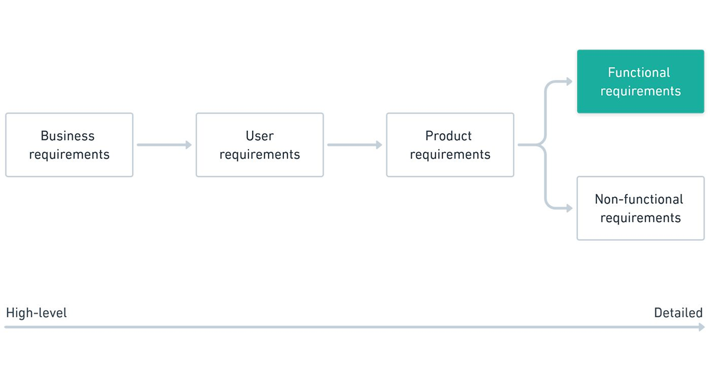

Business vs system requirements · FR and NFR · SMART · SRS
→ next slide | ESC overview
1. Business requirements vs system requirements
2. Functional requirements — and why they are not user stories
3. Non-functional requirements and their categories
4. SMART — what makes a requirement testable
5. The SRS document

A requirement is a documented need that the product must satisfy. Business requirements say why; system requirements say what, in enough detail to build and to test.
Both must be SMART: specific, measurable, achievable, realistic, timely.
One user story becomes several functional requirements. Each functional requirement becomes several test cases. That chain is what makes testing traceable.
| Bad requirement | Good requirement |
|---|---|
| The system should allow users to post jobs. | Employers must be able to post job listings by providing job title, job description, location, salary range and job type. |
| Users should be able to search for jobs. | Users must be able to search for jobs by keyword and filter results by location, salary range and job type. Results are shown as a list and can be sorted by relevance, date posted or salary. |
Test the requirement before you test the code: can you write a test case from it that has exactly one expected result? If not, it is not finished.
| Category | Meaning |
|---|---|
| Availability | System is accessible when required |
| Compatibility | System operates with other components |
| Maintainability | System is easily modified for new needs |
| Performance | System responds in time with minimum resource consumption |
| Portability | System can be moved between environments |
| Reliability | System performs its functions for a specified period |
| Scalability | System grows with increased workload |
| Security | System is protected against malicious access or use |
| Usability | System is easy for a user to learn |
| Category | Meaning |
|---|---|
| Certification | System meets necessary standards or conventions |
| Compliance | System meets regulatory or legal constraints |
| Localization | System supports several locales — languages, laws, currencies, cultures |
| Service level agreements | System follows the formally agreed rules |
| Extensibility | System can be updated with new functionality easily |
Several of these get a whole lesson later: accessibility and usability in Lesson 12, and performance and security in the bonus lessons.
| Bad | Good |
|---|---|
| The system must respond quickly. | Each request must be processed within 3 seconds with 10,000 concurrent users. |
| The system should be secure. | User data, including CVs, must be encrypted with industry-standard TLS in transit. Passwords must be hashed and salted. Access to applications and CVs is restricted to authorised personnel. |
SMART is not paperwork. A requirement that is not measurable cannot fail a test — which means it cannot pass one either.
Source: BABOK, International Institute of Business Analysis
A Software Requirements Specification collects everything the team agreed to build: scope, functional requirements, non-functional requirements, interfaces, constraints — and later in this course, your test cases.
Your SRS grows through the course: requirements now, architecture in Lesson 5, test cases in Lesson 10, and it gets peer reviewed by another team afterwards.
In your team, write the requirements document for your own project using the SRS template. It must contain functional requirements and non-functional requirements, all of them SMART.
You will build the product against these requirements and test against them later — write them properly now.
Full brief: Homework 4